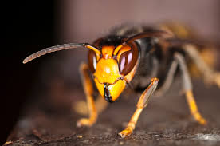

Système IoT de surveillance non-intrusive pour préserver la santé de vos colonies. Température, humidité, analyse acoustique, sans jamais ouvrir la ruche.
Non-intrusive IoT monitoring system to preserve the health of your colonies. Temperature, humidity, acoustic analysis, without ever opening the hive.
La viabilité de 75 % des cultures mondiales repose sur la pollinisation, mais la filière apicole manque d'outils numériques viables pour protéger ses colonies.
The viability of 75% of global crops relies on pollination, yet the beekeeping sector lacks viable digital tools to protect its colonies.
Les pollinisateurs soutiennent environ 35 % du volume alimentaire mondial. En France, la pollinisation génère entre 2,3 et 5,3 milliards d'euros de valeur agricole annuelle.
Pollinators support about 35% of global food volume. In France, pollination generates between 2.3 and 5.3 billion euros in annual agricultural value.
25 % des colonies disparaissent chaque année. Un déclin massif imputable à la toxicité chimique, aux pathogènes, aux prédateurs (frelon asiatique) et au stress climatique.
25% of colonies disappear each year. A massive decline attributable to chemical toxicity, pathogens, predators (Asian hornet), and climatic stress.
68 % des apiculteurs possèdent moins de 10 ruches. L'absence de solutions abordables impose des visites physiques stressantes pour les colonies et les apiculteurs.
68% of beekeepers own fewer than 10 hives. The lack of affordable solutions forces stressful physical visits for both colonies and beekeepers.
Une architecture IoT de bout en bout permettant de surveiller une flotte de ruches à distance, sans perturber l'homéostasie, pour tous les apiculteurs.
An end-to-end IoT architecture enabling remote monitoring of a hive fleet, without disrupting homeostasis, for all beekeepers.
Module embarqué dans la ruche. Mesure en continu la température, l'humidité et les signaux acoustiques. Conception 100 % autonome sur énergie solaire.
In-hive embedded module. Continuously measures temperature, humidity, and acoustic signals. 100% autonomous solar-powered design.
Module servant de passerelle locale centralisant les données via LoRa 868 MHz sur plusieurs kilomètres. Stockage InfluxDB + PostgreSQL. Fiable même en zone blanche.
Local gateway centralizing data via LoRa 868 MHz over several kilometers. InfluxDB + PostgreSQL storage. Reliable even in dead zones.
Plateforme web et application Android. Supervisez l'état de santé, analysez l'historique et recevez des alertes prédictives en temps réel.
Web platform and Android app. Monitor health status, analyze history, and receive predictive alerts in real time.
Les données traversent quatre couches, de la ruche à votre smartphone.
Data travels through four layers, from the hive to your smartphone.
Beetter Hive
ESP32-C6 collecte température (SHT40), humidité et son (ADA6049) en continu.
Beetter Hive
ESP32-C6 continuously collects temperature (SHT40), humidity and sound (ADA6049).
Envoi radio 868 MHz longue portée (plusieurs km). Redondance : stockage SD local si perte du signal.
868 MHz long-range radio (several km). Redundancy: local SD storage if signal is lost.
Beetter Home
Raspberry Pi agrège les trames, stocke dans InfluxDB et pousse vers le cloud via API REST.
Beetter Home
Raspberry Pi aggregates frames, stores in InfluxDB, and pushes to cloud via REST API.
Tableau de bord & App Mobile
Tableau de bord web + App Android avec graphes, carte interactive et alertes push.
Dashboard & App
Web dashboard + Android app with graphs, interactive map, and push alerts.
Interface web temps réel accessible depuis n'importe quel navigateur, et application Android pour une supervision mobile complète.
Real-time web interface accessible from any browser, and Android app for complete mobile supervision.
Graphes navigables sur différentes plages temporelles : 1h, 6h, 24h, 7j ou 30j. Export des données brutes pour analyse externe.
Navigable graphs over different time ranges : 1h, 6h, 24h, 7d, or 30d. Raw data export for external analysis.
Notifications sur smartphone lors du franchissement de seuils critiques ou de la détection d'un événement acoustique.
Smartphone notifications when critical thresholds are crossed or an acoustic event is detected.
Carte interactive géolocalisant chaque ruche avec données météo croisées. Supervision centralisée depuis une interface unique.
Interactive map geolocating each hive with cross-referenced weather data. Centralized supervision from a single interface.
Détection des signatures sonores : essaimage imminent, orphelinage, intrusion de frelons asiatiques. L'apiculture acoustique permet d'anticiper les crises sans intervention.
Detection of sound signatures: imminent swarming, queenless colony, Asian hornet intrusion. Acoustic beekeeping enables anticipating crises without intervention.
Fonctionnement 24h/24, 7j/7 sans raccordement électrique. Panneau solaire SOL3W + accumulateur LiPo. Opérationnel même en cas de faible ensoleillement prolongé.
24/7 operation without electrical connection. SOL3W solar panel + LiPo battery. Operational even during prolonged low sunlight.
Température et humidité intérieure/extérieure en temps réel. Seuils critiques : couvain entre 33-36 °C, humidité optimale 50-60 %. Alertes automatiques sur dépassement.
Real-time interior/exterior temperature and humidity. Critical thresholds: brood between 33-36°C, optimal humidity 50-60%. Automatic alerts on threshold breach.
Confronté à la réalité du terrain lors d'un entretien avec Alexandra, une apicultrice amateure. Notre conception a évolué : interface web compatible avec tous navigateurs et téléphones comme iOS, ainsi que la réduction des fausses alertes.
Challenged by field reality through an interview with Alexandra, an amateur beekeeper. Our design evolved : web interface compatible with all browsers and mobile devices, as well as reducing false alarms.
Beetter signale, il ne décide pas. Nous avons renoncé actionneurs comme les trappes et répulsifs automatiques : l'apiculteur reste le seul à décider des actions à faire, selon sa connaissance du terrain.
Beetter provides alerts, it does not make decisions. We have opted out of using devices such as automatic hive covers and repellents : the beekeeper remains the sole decision-maker regarding what actions to take, based on their knowledge of the site.
Lire le rapport d'éthique complet Read the full ethics report
Cinq étudiants, cinq pôles de compétences.
Five students, five areas of expertise.
Le frelon asiatique est un prédateur spécialisé qui chasse en vol stationnaire devant la ruche. L'algorithme Beetter identifie sa signature acoustique distincte pour alerter l'apiculteur avant la décimation de la colonie.
The Asian hornet is a specialized predator that hunts in a hover flight in front of the hive. The Beetter algorithm identifies its distinct acoustic signature to alert the beekeeper before the colony is decimated.
🎮 Protéger la ruche : Mini-jeu 🎮 Protect the Hive: Mini-game